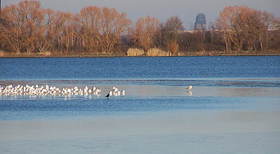
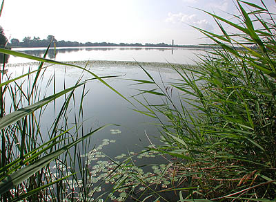

|
Wir laden Sie ein, den Elsterstausee zu erhalten! .... Warum?
Lesen Sie selbst, wie es noch vor kurzem war:
- Am Elsterstausee finden Sie gut erreichbar und stadtnah Ruhe und Entspannung. Hier werden Sie auf schattigen Wegen, die direkt am Ufer entlangführen, beim Spiel von Wasser und Wolken Kraft für den Alltag schöpfen und so manche Naturbeobachtung erleben. Die etwa 3 Kilometer lange Runde um den See kann auch von älteren Mitmenschen und mit Kinderwagen gut bewältigt werden und stellt eine idyllische Alternative zum eher leistungsorientierten Wandern um die großen Tagebauseen dar.
- Am Nordufer luden gepflegte, schattige Wiesen zum Verweilen oder zum Picknick und der flache Strand zum Planschen ein. Wer sein eigener Kapitän sein wollte, konnte sich beim Bootsverleih Wittig einen schwimmenden Untersatz ausleihen und in See stechen, ohne von hektischem Kanuverkehr und vorbeirauschenden Segelbooten „aufgeschreckt“ zu werden. Und wer eine kleine Stärkung benötigt, findet diese günstig im „Fröhlichen Hecht“.
- Fischerei in Leipzig? – Ja, das gab es! Wozu weit Fahren? Sie konnten alljährlich, im September ein großes Schaufischen an diesem traditionellen Ort erleben. Bis dahin hätten Sie sich am Elsterstausee selbst von der natürlichen Aufzucht der Fische überzeugen können. Und vielleicht hätten Sie schon den einen oder anderen dicken Karpfen beobachtet, der später einmal zu einem Festmahl für Sie und Ihre Familie herangewachsen wäre.
- Lassen Sie die Symbolik des Elsterstausees auf sich wirken! .... Der See entstand im Zusammenhang mit Hochwasserschutzmaßnahmen an der Weißen Elster in der ersten Hälfte des 20. Jahrhunderts. +++ Im Gegensatz zu „eingemauerten“ Flüssen vielen anderen Städten vor allem in den alten Bundesländern wurde in Leipzig schon damals daran gedacht dem Wasser Platz zu geben. +++ Der Bau des Stausees war eine der ersten großen Arbeitsbeschaffungsmaßnahmen Mitteldeutschlands. +++ Zumindest der jetzt noch vorhandene Teil des Sees konnte dem Vordringen der Kohlebagger abgetrotzt werden. +++ Das Engagement sehr vieler Leipziger Bürger hat auch über 10 Jahre nach den großen Umbrüchen der Wende politische Kraft gezeigt! Der Stausee konnte gegen den Willen von „Stadtgrößen“, die mittlerweile das Rathaus verlassen haben, erhalten werden. Doch nun ist es wieder fünf vor zwölf!
Und, sind Sie neugierig geworden? Dann schauen Sie doch bald einmal vorbei und betrachten einen sterbenden See!
Informationen zum Erhalt des Sees finden Sie beim Förderverein unter elsterstausee.de
|